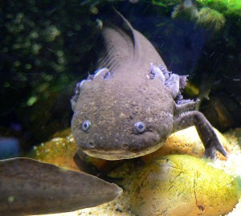
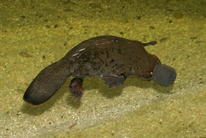

Some animals are truly amazing. Just take a look at them. I've also included some video clips of funny individuals.
Axolotl
{kind=link}

The axolotl is capable of the regeneration of entire lost appendages in a period of months, and, in certain cases, more vital structures. Some have indeed been found restoring the less vital parts of their brains. They can also readily accept transplants from other individuals, including eyes and parts of the brain—restoring these alien organs to full functionality. In some cases, axolotls have been known to repair a damaged limb as well as regenerating an additional one, ending up with an extra appendage that makes them attractive to pet owners as a novelty. In metamorphosed individuals, however, the ability to regenerate is greatly diminished. The axolotl is therefore used as a model for the development of limbs in vertebrates.
Platypus
{kind=link}

Together with the four species of echidna, the platypus is one of the five extant species of monotremes, the only mammals that lay eggs instead of giving birth to live young. It is one of the few venomous mammals.
Mimic Octopus
The mimic octopus has a strong ability to mimic other creatures. It grows up to 60 cm (2 feet) in length. Its normal colouring consists of brown and white stripes or spots.
Lyrebird
Lyrebirds are most notable for their superb ability to mimic natural and artificial sounds from their environment. Lyrebirds have unique plumes of neutral coloured tailfeathers.